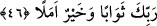

Nitekim Allah Teâlâ bunu şöyle misal vermektedir: “Görmedin mi Allah nasıl bir
benzetme yaptı: Güzel söz, kökü (yerde) sâbit, dalları gökte olan güzel bir ağaç
gibidir.” (İbrahim, 14/24) Başka bir âyette de şöyle misal getirir: “Güzel olan ülkenin
bitkisi, Rabb’inin izniyle çıkar; kötü olandan ise yararsız bitkiden başka bir şey
çıkmaz.” (el-A’raf, 7/58). İşte şeriat suyu ile sulanan îmân ağacı, tevhîd tohumundan,
yâni “Lâ ilahe ilallah” kelimesinden yeşerir. Bu nur ile insâniyetin en aşağı derecesinde
bulunan ruh, rûhâniyetin en yüce mertebesine ve rabbânî yakınlık menzillerinin en
yakınına ulaşır. Nitekim Allah Teâlâ şöyle buyurur: “Güzel söz O’na çıkar, iyi amel
onu yükseltir.” (Fâtır, 35/10)
Allah Teâlâ, ulvî rûhun hayvanlar gibi hatta daha da aşağı olması için onu hor ve zelil
kılıp hayvânî cismâniyetin en aşağılarına atmaya ve yardımsız bırakmaya kâdir olduğu
gibi onu mukarreb meleklerin secde ettiği kimse olmak için inâyet cezbeleriyle kurb
(Hakk’a yakınlık) mertebelerinin yücelerinin en yücesine cezbetmeye de kadirdir.
Molla Câmî der ki:
Sâlikler Dost’un eriştirmediği bir yere ulaşamazlar,
Nice yıllar bu yolda koşup gayret etseler de.
Allah’tan bizi muhabbet halkalarına katmasını, bizi kendisine itâat eden ve yakın
olanlardan kılmasını niyaz ederiz.
Vehb şöyle der: Bazı kitaplarda şöyle yazılı olduğunu gördüm: “Dünya akıllı
kimselere bir ganimet, câhillere ise gaflet ve aldanıştır. Peygamberler ve velîler de
dünyada yaşadılar, ama ona iltifat etmediler. Onun geçici güzelliklerine aldanıp rağbet
etmediler.”
Derler ki: Hapishaneye giren herkes mahpus değildir. Bilakis oraya giren öyleleri
vardır ki mahpusları oradan çıkarmak ve esirleri kurtarmak için girerler. İşte
peygamberlerle onlara tâbi olanlar, kevn ve fesad âlemine ancak dünya hapishanesinde
esir düşen nefisleri kurtarmak için gelmişlerdir. Nasıl ki mahpus, kendisini kurtarmak
için hapishaneye girene tâbi olunca kurtulursa, aynen bunun gibi dünya hapishanesinde
peygamberlerin sünnetlerine ve yollarına uyanlar da dünya hapishanesinden çıkar ve
kurtulur.
46. Servet ve oğullar, dünya hayatının süsüdür; ölümsüz olan iyi işler ise
Rabbinin nezdinde hem sevapça daha hayırlı, hem de ümit bağlamaya daha lâyıktır.